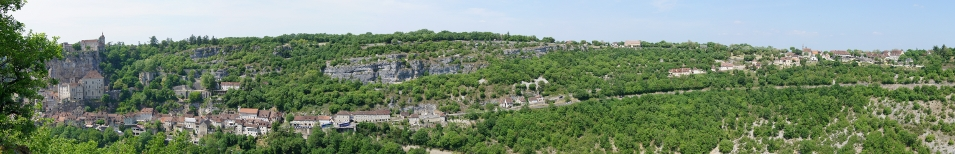

window.addEvent('load', function(){
var marked = new MooPano('marked-panorama', {
big: 'images/big.jpg',
points: {
'chateau': new MooPano.Point({title: 'le château', top: 40, left: 90}),
'cite': new MooPano.Point({title: 'la cité médiévale', top: 120, left: 107}),
'hospitalet': new MooPano.Point({title: 'l\'hôspitalet', top: 49, left: 821})
}
});
Object.each(marked.options.points, function(point, id){
document.id(id).addEvents({
mouseenter: function(e){
marked.displayPoint(id);
},
mouseleave: function(e){
marked.hidePoint(id);
marked.stopZoom();
},
click: function(e){
marked.zoomToCenter({
x: marked.options.points[id].options.left,
y: marked.options.points[id].options.top
});
marked.displayPoint(id);
e.stop();
}
});
});
});
window.addEvent('load', function(){
var simple = new MooPano('simple-panorama', {
big: 'images/big.jpg',
});
});